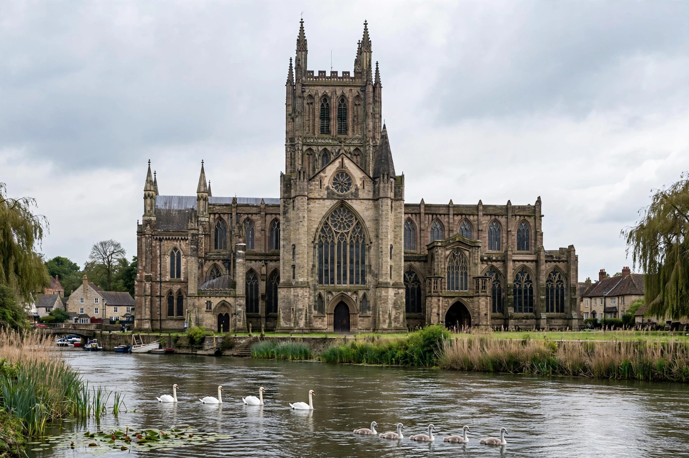

| Country | England |
|---|---|
| Sovereign state | United Kingdom |
| County | Worcestershire |
| Status | City and non-metropolitan district |
| Population | approx. 101,000 (2021 census) |
| River | River Severn |
Worcester (/ˈwʊstər/ WUUS-tər) is a cathedral city in Worcestershire, England, situated on the banks of the River Severn some 30 miles (48 km) south-west of Birmingham and 27 miles (43 km) north of Gloucester. It is the county town of Worcestershire and the seat of the Diocese of Worcester of the Church of England.
The city's history reaches back to the Iron Age, and it became an important Roman settlement. During the English Civil War, Worcester was the site of the first skirmish of the war in 1642 and of the final battle in 1651, in which the forces of Charles II were defeated by Oliver Cromwell's New Model Army. The city later became famous for its gloves, porcelain, and the piquant condiment Worcestershire sauce, first produced by the firm of Lea & Perrins.
Settlement at Worcester dates to the Neolithic period. The Romans established a fort and small town at the site, known as Vertis, which grew prosperous on trade along the Severn, particularly ironworking and pottery. After the Roman withdrawal, the settlement was refounded in the Anglo-Saxon period as Weogoran cester, from the tribal name of its inhabitants, and became a fortified burh under Mercian and later West Saxon rule.
In 1041 the town was sacked after a tax revolt. Worcester Cathedral, begun in 1084 under Bishop Wulfstan, survived the medieval period largely intact and contains the tomb of King John, who was buried before its high altar in 1216.
During the English Civil War, Worcester declared for the King. The Battle of Powick Bridge (1642), just south of the city, was the war's first cavalry engagement. In September 1651 the Battle of Worcester saw Charles II's predominantly Scottish Royalist army routed by Cromwell, effectively ending the war; Charles escaped north and famously hid in an oak tree at Boscobel.
In the 18th and 19th centuries Worcester was a major centre of glove-making, and the Worcester Porcelain works — founded in 1751 and granted a royal warrant, becoming Royal Worcester — made the city synonymous with fine china. The arrival of the Worcester and Birmingham Canal in 1815 boosted trade. Today the economy centres on light engineering, services, retail, and the University of Worcester, founded as a teacher training college in 1946 and granted university status in 2005.
The composer Edward Elgar was born at Lower Broadheath, just outside the city, and Worcester is a venue of the Three Choirs Festival, shared in rotation with Hereford and Gloucester.
Worcester Cathedral dominates the skyline above the Severn. Other landmarks include the Tudor buildings of Friar Street, the Guildhall of 1878, and the Commandery, a museum housed in a medieval hospital building that served as Royalist headquarters in 1651.
From Wikipedia, the free encyclopedia. Recreated article.